Kick-Off 2026
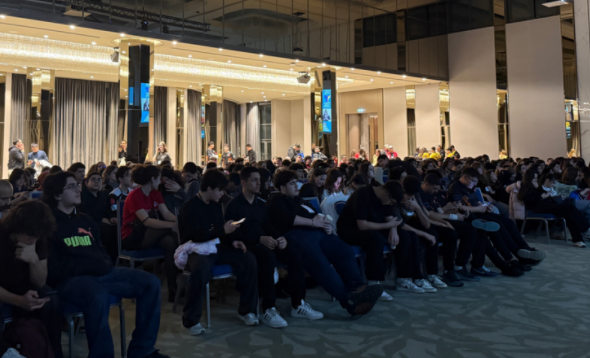
The Kick-Off events, which mark the start of the FRC season, are the days when teams learn the new challenge theme for the first time and take their first steps into the season. As Kaiser Robotics, through the Kick-Off event we organized for the 2026 season, we brought together teams from different cities and shared the excitement of the new season with the entire community.
FTC Off-Season
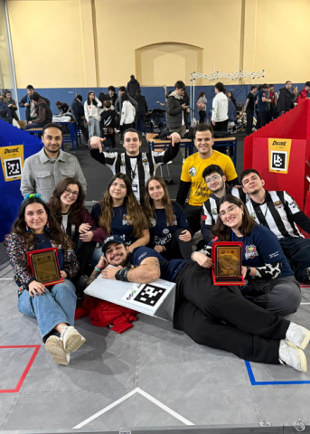
We organized the Kadıköy FTC Off-Season in collaboration with Team 10043 to provide FTC teams with a real tournament experience during the off-season. Throughout the event, students had the opportunity to test their robots, improve their driving skills, and interact with other teams; we also provided support for the participating teams’ transportation and lodging expenses.
Hackathon
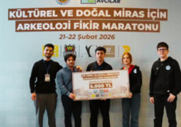
In collaboration with Avcılar Municipality, İBB Miras, and UNESCO, we organized a Hackathon to encourage young people to develop innovative solutions for the preservation of cultural heritage. Throughout the event, participants worked on engineering, technology, and design-focused projects, transforming their ideas into tangible solutions and presenting them to a wider audience. Outstanding projects were recognized and awarded at the end of the event.
FIRST Handbook
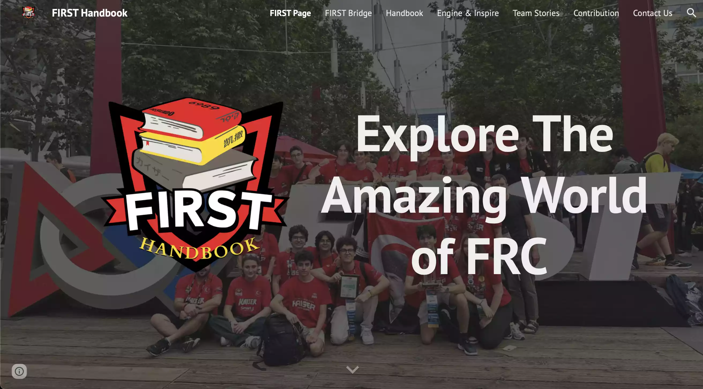
For teams newly joining the FIRST ecosystem, access to information can often be a significant barrier. Through the FIRST Handbook project, we brought together official resources and our years of experience to create both technical and organizational content. By making 39 resources available in 30 different languages, we helped students from different parts of the world access the same information on equal terms. In doing so, we aimed to eliminate language barriers that often limit access to knowledge and support more teams in their development and integration into the FIRST community.
VendBook
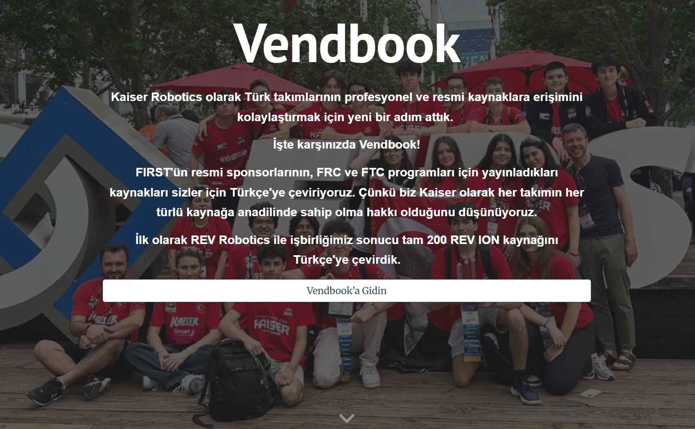
As part of the VendBook project carried out in collaboration with REV Robotics, we translated hundreds of technical resources related to the REV ION and REV DUO systems into Turkish and German. Our goal was to enable students to access professional robotics documentation in their own languages.
KaiserAsMentor
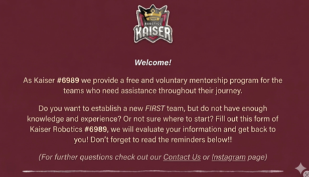
Through the KaiserAsMentor program, we provide one-on-one mentorship support support to teams at different stages of their FIRST journey. From technical development to team management, and from project planning to competition preparation, we share our experience across a wide range of areas to support teams in their growth.
Awareness 101
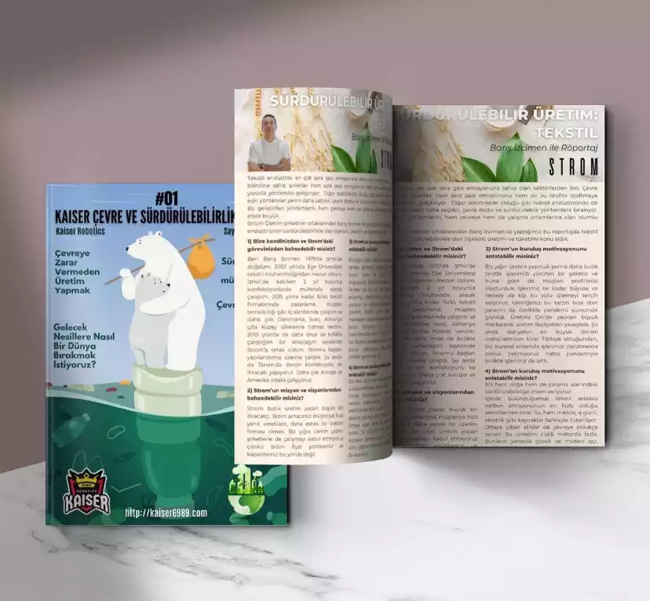
With the Awareness 101 project, we aim to raise awareness on various social issues and encourage young people to think critically about the world around them. As part of this initiative, we produce informative social media content and podcasts; we also make our seasonal magazines more accessible by preparing them in dyslexia-friendly formats and providing audio versions. While promoting visibility of diverse experiences and perspectives, we strive to help young people approach the events and challenges in their surroundings with greater awareness, sensitivity, and empathy.
0 to FRC
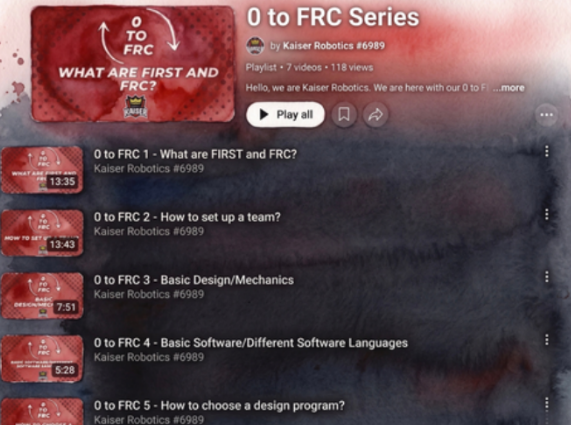
One of the biggest challenges for teams newly joining FRC is not knowing where to start. To address this need, we brought together our years of experience in the 0 to FRC video series, covering topics ranging from robot design to team management. All content was made freely accessible to support teams at the beginning of their journey.
Kaiser Support Line + FRC Worldwide
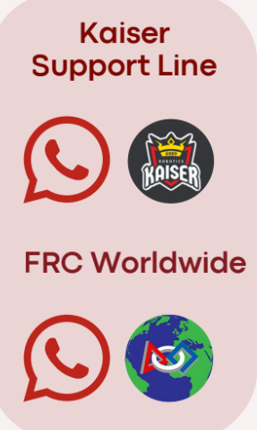
Through Kaiser Support Line and the FRC Worldwide platform, we enable teams from around the world to access the support they need more easily. We provide guidance on topics ranging from technical challenges to team management, helping students find solutions at different stages of their FRC journey.
Bilim Postası
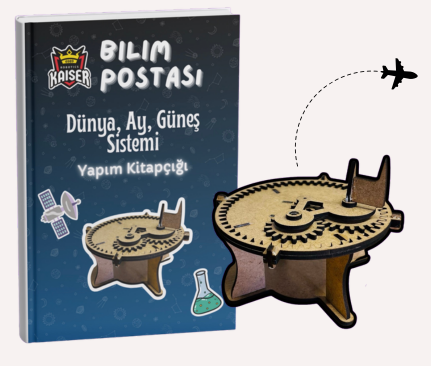
Through the Bilim Postası project, we aim to make STEM education more accessible and lasting for children. We distribute STEM kits that we design and produce ourselves to students in different regions of Türkiye, enabling them to engage with science and technology through hands-on learning experiences.
Neuro Quest
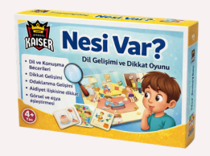
In collaboration with Tohum Autism Foundation, the Neuro Quest project was developed to support the learning processes of neurodivergent individuals through specially designed educational materials and STEM kits. We aim to create more inclusive learning experiences by delivering these resources to students through various partner institutions.
Special Workshops
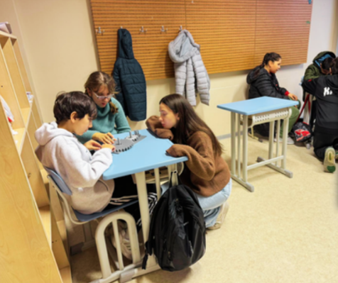
We believe that science and technology should be accessible to everyone. With this vision, we organized Special Workshops across various schools using specially designed STEM kits for students with visual, hearing, and physical disabilities.
FIRST AGE
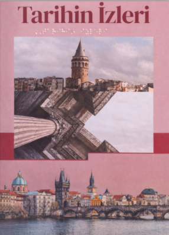
Through the FIRST AGE project, we aimed to make historical artifacts and cultural heritage more accessible for visually impaired students. By developing 3D models and Braille-supported materials, we enabled students to explore historical structures through touch. This project highlights that cultural heritage can be experienced not only through sight, but also through different senses, allowing students to connect with history through their own learning pathways.
Reintroduce
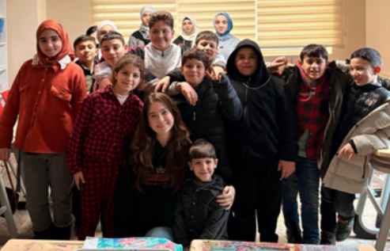
We developed the Reintroduce project to support refugee children’s integration into social life and to create safe spaces where they can express themselves more confidently. Through cultural, artistic, and STEM-based activities, we engaged with hundreds of children and created environments where students from different backgrounds could learn and build together.
Impact In Action
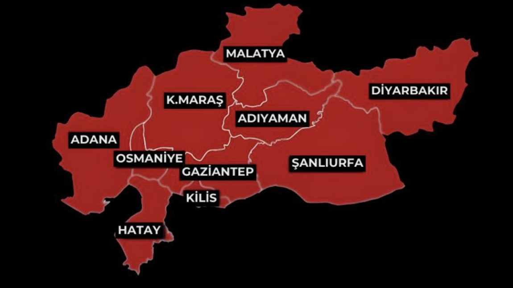
Following the February 6 earthquakes in Türkiye, we launched the Impact in Action project to support the educational journey of children in affected regions. With curricula and educational materials tailored to their needs, we delivered STEM and technology-based workshops across 11 impacted provinces. We recognize that the effects of disasters extend far beyond the day they occur, and for children in particular, recovery is a long process. Therefore, we designed our work not as a one-time intervention but as a continuous educational model. Through each session, we aim to encourage children to keep building, exploring, and dreaming, which remains the core purpose of Impact in Action.
Women in Society
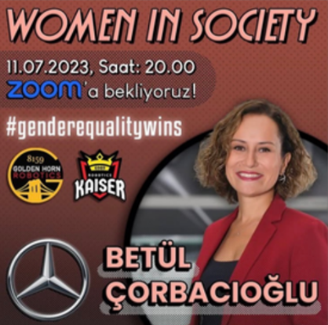
For the past six years, we have continuously run the Women in Society webinar series, created to bring women who stand out in different fields together with young people. Speakers from areas such as academia, engineering, entrepreneurship, and the arts share their experiences and stories with participants.
Kaiser*innen
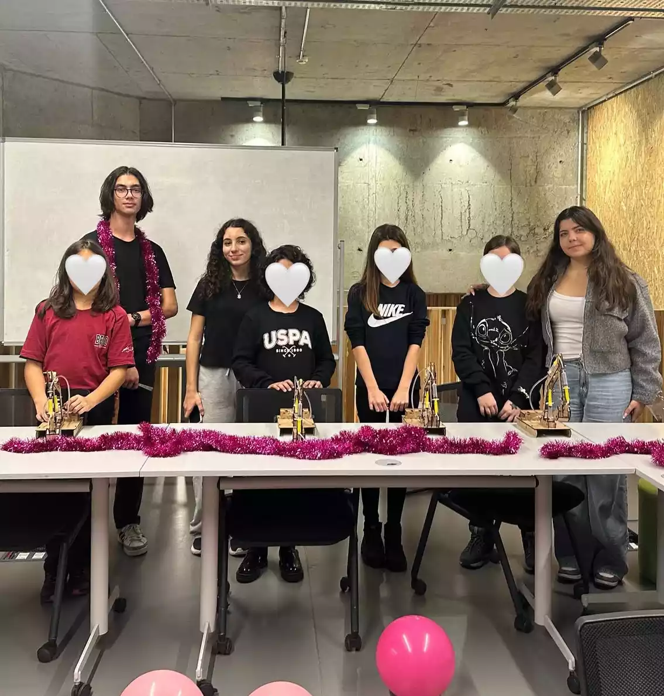
We launched Kaiser*innen to support young girls in gaining more confidence in entering STEM fields. Through our workshops, children are introduced to science and technology in an engaging way, using experiments, hands-on activities, and STEM kits. During our sessions, we observed that many girls showed strong interest and potential but often tended to hold themselves back. For this reason, Kaiser*innen was designed not only as a workshop series, but as a learning environment where children feel comfortablefeel comfortable sharing ideas, asking questions, and expressing themselves freely. With every session, we aim to make it a little more visible that science is for everyone.
Learntech
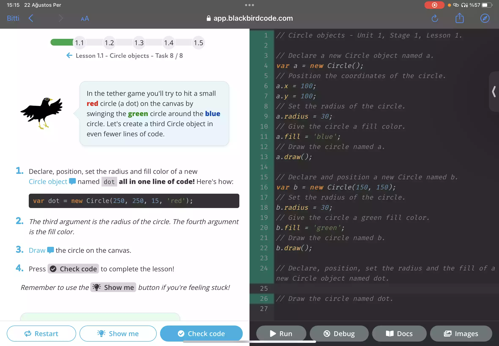
We observed that access to robotics and STEM education in our country is often limited due to cost, location, and available opportunities. To help reduce these barriers, we launched LearnTech. Through live online classes and free educational content, we bring students together with coding, design, and technology, making learning opportunities more accessible.
House Of Tech
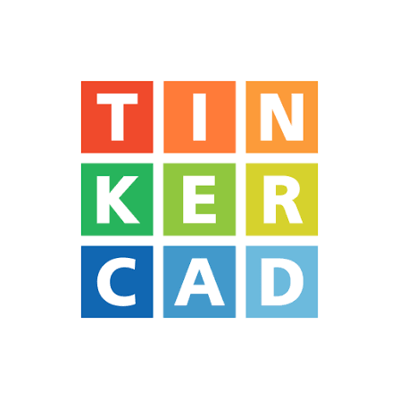
To build a more sustainable continuation of the learning journey that began with LearnTech, we established the House of Tech program. Through long-term weekend-based training sessions, students are given the opportunity to engage in a more comprehensive learning experience in technology and design.
Kaiserland
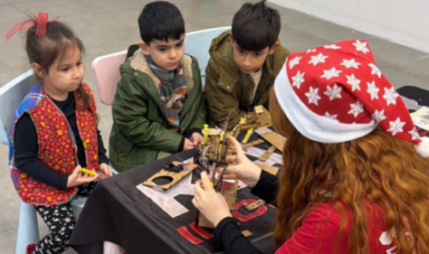
We believe that learning should not be limited to classrooms when it comes to connecting children with science and technology. With this vision, we launched Kaiserland in collaboration with Vialand Mall, organizing a month-long series of STEM workshops that provided children with hands-on learning experiences. In each workshop, children explored, built, and experimented, discovering the engaging side of science. By bringing STEM into a familiar everyday environment, we created one of the first meaningful connections many children had with technology. Through Kaiserland, science became less of an abstract concept and more of an experience that any curious child could touch and explore.
Avcılar Education Camp
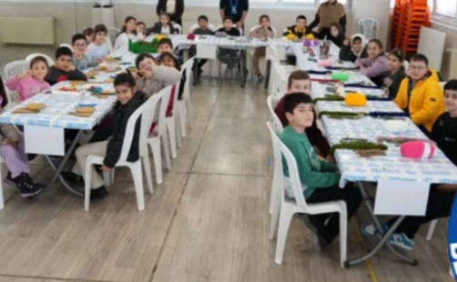
In collaboration with Avcılar Municipality, we launched the Avcılar Education Camp to bring technology and STEM education to children and adults living in underserved areas. Through workshops ranging from digital literacy to robotics, we supported participants in developing new skills and expanding their opportunities.
LÖSEV

Within our collaboration with LÖSEV, we brought students who have gone through leukemia treatment together with STEM and robotics education. Our goal was not only to teach technical skills, but to create a sustainable learning environment where children could experience building, exploring, and being part of a team. Over time, this structured approach turned each session into more than just an educational activity; it became a space where children could begin to dream again. As this journey continued, we founded the Light of Future 839 FLL team, enabling students to actively participate in the FIRST ecosystem. With growing interest, we also supported the formation of a second FLL team and our first FTC team.
Imperium Seabin
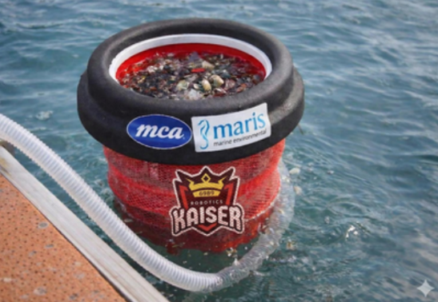
We initiated the Imperium Seabin project to develop a sustainable solution that contributes to the collection of waste from the ocean surface. Developed in collaboration with engineers from MCA and MARIS, the system operates on a filtration principle by drawing in water and separating surface waste.
ZFA MINT Schule
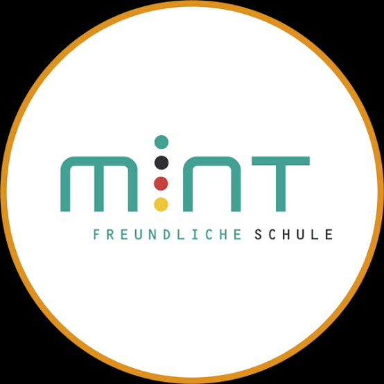
At Kaiser Robotics, we prioritize sharing our work not only on a local scale but also on international platforms. In this context, we played an active role in integrating our school into the ZFA MINT Schule network. This network brings together German schools focused on STEM education, and through it, we had the opportunity to connect with representatives from over 100 countries and more than 1,200 schools at an international conference held in Egyptthe opportunity to connect with representatives from over 100 countries and more than 1,200 schools at an international conference held in Egypt. Throughout the conference, we did not only present our projects; we also shared the culture of FIRST, our team’s experiences, and the values we have built over the years.
MIRAS
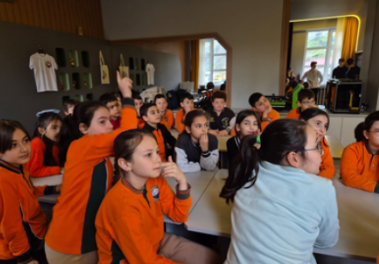
Through the MIRAS project, we aim to reach students with limited access to STEM education across different regions of Türkiye and make science more equitable and accessible for everyone. Through hands-on workshops and training sessions, we not only introduce children to STEM concepts but also create a learning environment where they can discover their own potential through direct experience.